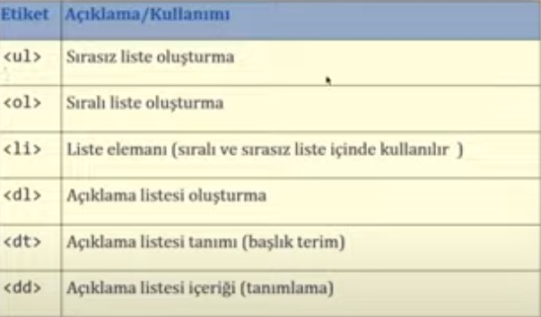

listeler temelde 3 şekildedir sıralı, sırasız ve açıklamalı listelerdir "ol" etiketi default olarak numerik sıralama yapar. li etiketi ise listenin içerisine tanımladığımız öğeleri belirtir. " ol "" etiketinin içerisine "type" değeri verdiğimizde 1234... abc... yada roma rakamları ile bir sıralama yaparbiliriz. "ul " etiketi sırasısz liste yapar
ul etiketinin içerisine style özelliği ile maddelerin işaretlerini tanımlayabilir.disk daire kare vb.
dl etiketinin içisinde dt etiketi liste başlığı ve dd etiketi liste maddelerini belirtir.